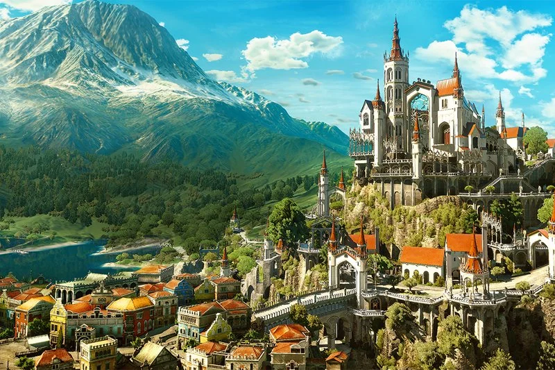

Palác Beauclair
Palác působí skoro pohádkově — bílé věže, barevné zahrady, vinice a rytířská atmosféra kontrastují s temným světem severních království.
Tvůrci se inspirovali hlavně francouzskou a středomořskou architekturou.
Historicky byl původně postaven elfy a později přestavěn architektem Peterem Faramondem během vlády Adely Marty.
Palác obsahuje obrovskou knihovnu, rytířský sál a dokonce tajné magické chodby skryté iluzemi.
Nejdůležitější osobou paláce je samozřejmě vévodkyně Anna Henrietta, často nazývaná Anarietta.
Je vládkyní Toussaintu a zároveň jednou z nejcharismatičtějších postav v celé hře.
Na první pohled působí jako rozmazlená aristokratka milující turnaje, víno a dvorskou etiketu.
Ve skutečnosti ale vládne zemi, která je politicky velmi složitá.
Toussaint je vazalským státem Nilfgaardu — formálně podřízený císaři Emhyrovi, ale zároveň si zachovává velkou autonomii.
Obyčejní lidé Toussaintu se od severu také hodně liší.
Ve městě Beauclair člověk vidí vinaře, bardy, obchodníky, malíře a řemeslníky.
Lidé zde působí veseleji a uvolněněji. Víno je téměř součástí identity země a slavnosti jsou běžnou součástí života.
Dokonce i stráže a rytíři mají elegantnější uniformy než vojáci severních království.
Vinice Corvo Bianco
Kdysi bývalo Corvo Bianco pyšným vinařstvím.
Ve sklepích odpočívala nejlepší vína široko daleko a zahrady byly plné růží, fontán a soch.
Corvo Bianco se nachází v malebném, sluncem zalitém knížectví Toussaint, které je známé svou rytířskou kulturou, absencí válek a především prvotřídním vínem.
Vinice má bohatou historii, ale před Geraltovým příchodem upadla do dluhů a chátrala, protože její předchozí majitel, baron Rossel, zkrachoval.
Vinici proto převzala knížecí koruna.
Geralt vinici nezíská koupí, nýbrž jako součást odměny od kněžny Anny Henrietty za přijetí zakázky na polapení Bestie z Beauclair.
Anna Henrietta si uvědomuje, že zaklínač potřebuje zázemí pro své vyšetřování, a zároveň jde o projev knížecí velkorysosti.
K majetku Geralt dostane také osobního majordoma jménem Barnabáš-Bazil Foulty, který se stará o chod panství a pomáhá zaklínačovi s jeho správou.
Nejde jen o obyčejnou lokaci na mapě, ale o bezpečný přístav, který Geraltovi z Rivie poprvé v jeho dlouhém a nebezpečném životě poskytuje skutečný domov.
Toussaint země vína a krve
Na první pohled Toussaint působí jako vystřižený z idealizované pohádky nebo renesančního obrazu.
Zatímco zbytek Severních království drancovala armáda a sužovala chudoba, toto knížectví zůstalo válkou zcela netknuté.
Krajina je permanentně zalitá sluncem, plná zvlněných kopců, olivových hájů a nekonečných vinic.
Víno je tlukoucím srdcem zdejší ekonomiky i kultury.
Místní odrůdy jako Erveluce, Fiorano nebo legendární Est Est jsou ceněny po celém známém světě.
Vinařství zde není jen řemeslem, ale posvátnou tradicí chráněnou zákony. Každá vinice má svou historii a status.
Společnost se řídí pěti rytířskými ctnostmi (štědrost, chrabrost, čest, soucit a moudrost).
Putující rytíři v naleštěných zbrojích zde skládají patetické přísahy, bojují na turnajích o přízeň dvorních dam a recitují poezii.
Toussaint je historicky i fakticky domovem prastarých, nesmírně mocných bytostí - vyšších upírů.
Zatímco lidé věří, že zemi vládnou oni, v podzemí a stínech existuje paralelní společnost upírů s vlastními pravidly a historií.
Teplé klima a rozsáhlá síť jeskyní a elfských ruin pod Beauclair vyhovují specifickým nestvůrám.